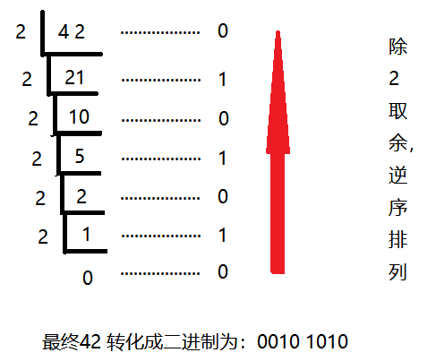
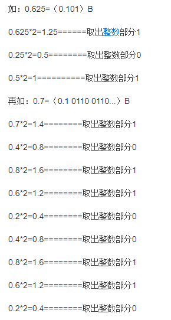
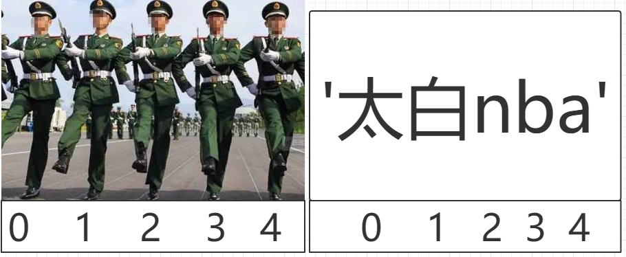
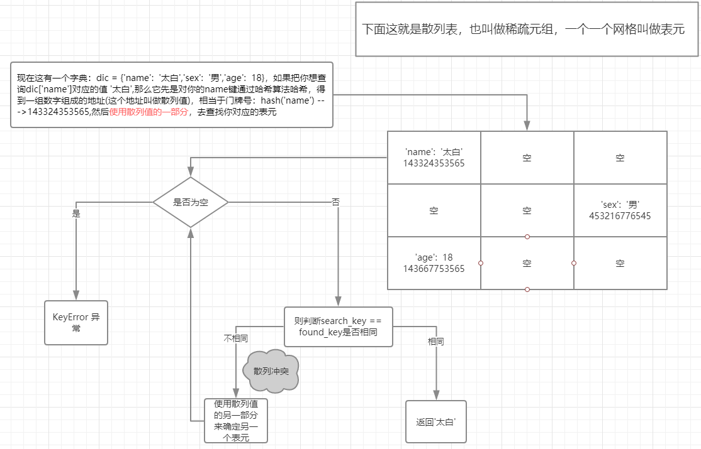

原文连接:https://www.cnblogs.com/weizhou/p/11551424.html
一.什么是数据类型？
什么是数据类型？
我们人类可以很容易的分清数字与字符的区别，但是计算机并不能呀，计算机虽然很强大，但从某种角度上看又很傻，除非你明确的告诉它，1是数字，“汉”是文字，否则它是分不清1和‘汉’的区别的，因此，在每个编程语言里都会有一个叫数据类型的东东，其实就是对常用的各种数据类型进行了明确的划分，你想让计算机进行数值运算，你就传数字给它，你想让他处理文字，就传字符串类型给他。Python中常用的数据类型有多种，如下：
整数(int) ,字符串(str),布尔值(bool),列表(list),元组(tuple),字典(dict),集合(set).
- int。数字：主要用于运算。1 ，2,3...
- bool。判断真假：True, False.
- str。简单少量的储存数据，并进行相应的操作。name = 'alex',
- tuple。只读，不能更改。(1,'alex')
- list：大量有序数据，[1,'ses',True,[1,2,3],{'name':'jinxin'}]
- dict：大量数据，且是关联性比较强的数据 {'name':'jinxin','age':18,'name_list':['张三'，'李四']}
二.基础数据类型。
2.1数字int。
nt，就是咱们常见的数据类型，主要是用于葛总运算，加减乘数等这里就不给你举例说明了。
首先要给大家讲下是十进制与二进制之间的转换。
2.1.1 十进制二进制转换
十进制整数转换为二进制整数采用"除2取余，逆序排列"法。具体做法是：用2整除十进制整数，可以得到一个商和余数；再用2去除商，又会得到一个商和余数，如此进行，直到商为小于1时为止，然后把先得到的余数作为二进制数的低位有效位，后得到的余数作为二进制数的高位有效位，依次排列起来。

十进制小数转换成二进制小数采用"乘2取整，顺序排列"法。具体做法是：用2乘十进制小数，可以得到积，将积的整数部分取出，再用2乘余下的小数部分，又得到一个积，再将积的整数部分取出，如此进行，直到积中的小数部分为零，此时0或1为二进制的最后一位。或者达到所要求的精度为止。

二进制转化成十进制:
要从右到左用二进制的每个数去乘以2的相应次方,小数点后则是从左往右
例如：二进制数1101.01转化成十进制
1101.01（2）=1*20+0*21+1*22+1*23 +0*2-1+1*2-2=1+0+4+8+0+0.25=13.25（10）
所以总结起来通用公式为：
abcd.efg(2)=d*20+c*21+b*22+a*23+e*2-1+f*2-2+g*2-3（10）
或者是：
把二进制数首先写成加权系数展开式，然后按十进制加法规则求和。这种做法称为"按权相加"法。
此时，1101=8+4+0+1=13
再比如：二进制数100011转成十进制数可以看作这样：
数字中共有三个1 即第一位一个，第五位一个，第六位一个，然后对应十进制数即2的0次方+2的1次方+2的5次方， 即
100011=32+0+0+0+2+1=35
2.2.2 int操作方法
因为数字主要是用于计算，所以针对于数字可以使用的方法除了那些运算之外，没有什么经常会用的方法，python给咱们提供了一种方法：bit_length()就是帮助你快速的计算整数在内存中占用的二进制码的长度.
num = 10
print(num.bit_length()) # 当十进制用二进制表示时，最少使用的位数
# 运行结果: 42.2布尔值bool。
布尔值就两种：True，False。就是反应条件的正确与否。
真 1 True。
假 0 False。
这里补充一下int str bool 三者数据类型之间的转换。


1 # int ---> bool
2 i = 100
3 print(bool(i)) # True # 非零即True
4 i1 = 0
5 print(bool(i1)) # False 零即False
6
7 # bool ---> int
8 t = True
9 print(int(t)) # 1 True --> 1
10 t = False
11 print(int(t)) # 0 False --> 0
12
13 # int ---> str
14 i1 = 100
15 print(str(i1)) # '100'
16
17 # str ---> int # 全部由数字组成的字符串才可以转化成数字
18 s1 = '90'
19 print(int(s1)) # 90
20
21 # str ---> bool
22 s1 = '太白'
23 s2 = ''
24 print(bool(s1)) # True 非空即True
25 print(bool(s2)) # False
26 # bool ---> str
27 t1 = True
28 print(str(True)) # 'True'2.3字符串str。
Python中凡是用引号引起来的数据可以称为字符串类型，组成字符串的每个元素称之为字符，将这些字符一个一个连接起来，然后在用引号起来就是字符串。
s1 = '太白nb'
# 对于s1这个字符串来说，它由四个字符组成：太, 白, n, b。2.3.1、字符串的索引与切片。
组成字符串的字符从左至右，依次排列，他们都是有顺序的，就好比是部队的队列，从左至右依次报号(从零开始) ：0,1,2,3....

索引即下标，就是字符串组成的元素从第一个开始，初始索引为0以此类推。
a = 'ABCDEFGHIJK'
print(a[0])
print(a[3])
print(a[5])
print(a[7])
切片就是通过索引（索引：索引：步长）截取字符串的一段，形成新的字符串（原则就是顾头不顾腚）。
a = 'ABCDEFGHIJK'
print(a[0:3]) # print(a[:3]) 从开头开始取0可以默认不写
print(a[2:5])
print(a[:]) #默认到最后
print(a[:-1]) # -1 是列表中最后一个元素的索引，但是要满足顾头不顾腚的原则，所以取不到K元素
print(a[:5:2]) #加步长
print(a[-1:-5:-2]) #反向加步长2.3.2、字符串常用方法。
字符串除了可以用切片（步长）之外，还有一些其他的操作方法
1 #数字符串中的元素出现的个数。
2 # ret3 = a1.count("a",0,4) # 可切片
3 # print(ret3)
4
5 a4 = "dkfjdkfasf54"
6 #startswith 判断是否以...开头
7 #endswith 判断是否以...结尾
8 # ret4 = a4.endswith('jdk',3,6) # 顾头不顾腚
9 # print(ret4) # 返回的是布尔值
10 # ret5 = a4.startswith("kfj",1,4)
11 # print(ret5)
12
13 #split 以什么分割，最终形成一个列表此列表不含有这个分割的元素。
14 # ret9 = 'title,Tilte,atre,'.split('t')
15 # print(ret9)
16 # ret91 = 'title,Tilte,atre,'.rsplit('t',1)
17 # print(ret91)
18
19 #format的三种玩法 格式化输出
20 res='{} {} {}'.format('egon',18,'male')
21 res='{1} {0} {1}'.format('egon',18,'male')
22 res='{name} {age} {sex}'.format(sex='male',name='egon',age=18)
23
24 #strip
25 name='*barry**'
26 print(name.strip('*'))
27 print(name.lstrip('*'))
28 print(name.rstrip('*'))
29
30 #replace
31 name='alex say :i have one tesla,my name is alex'
32 print(name.replace('alex','SB',1))
33
34 #####is系列
35 name='taibai123'
36 print(name.isalnum()) #字符串由字母或数字组成
37 print(name.isalpha()) #字符串只由字母组成
38 print(name.isdecimal()) #字符串只由十进制组成
39
40
41 #############下面这些方法在数据类型补充时会讲到，现在不讲####################
42 #寻找字符串中的元素是否存在
43 # ret6 = a4.find("fjdk",1,6)
44 # print(ret6) # 返回的找到的元素的索引，如果找不到返回-1
45
46 # ret61 = a4.index("fjdk",4,6)
47 # print(ret61) # 返回的找到的元素的索引，找不到报错。
48
49 #captalize,swapcase,title
50 print(name.capitalize()) #首字母大写
51 print(name.swapcase()) #大小写翻转
52 msg='taibai say hi'
53 print(msg.title()) #每个单词的首字母大写
54
55 # 内同居中，总长度，空白处填充
56 ret2 = a1.center(20,"*")
57 print(ret2)2.4列表list
Why: 我们现在已经学过的数据类型有：数字，布尔值，字符串，大家都知道数字主要用于计算，bool值主要是条件判断，只有字符串可以用于数据的存储，这些数据类型够用么？对于一门语言来说，肯定是不够用的。就说字符串：
1，字符串只能存储少量的数据，对于大量的数据用字符串操作不方便也不易存储。
2，字符串存储的数据类型太单一，只能是字符串类型。
例如：‘1 True alex’ 像这样的字符串，我如果通过切片或者其他方法将1 True alex 取出来，他也只能是字符串，但是我想要得到数字的1，布尔值的True，必须还要转化，是不是很麻烦。
所以python给咱们也提供了一类数据类型，他能承载多种数据类型，这类数据类型被称作容器类数据类型可以存储大量的数据。列表就属于容器类的数据类型。
What:这个数据类型就是list列表。
列表是python的基础数据类型之一 ,其他编程语言也有类似的数据类型.比如JS中的数 组, java中的数组等等. 它是以[ ]括起来, 每个元素用' , '隔开而且可以存放各种数据类型: 列表是python中的基础数据类型之一，其他语言中也有类似于列表的数据类
型，比如js中叫数组，他是以[]括起来，每个元素以逗号隔开，而且他里面可以存放各种数据类型比如：
li = [‘alex’,123,Ture,(1,2,3,’wusir’),[1,2,3,’小明’,],{‘name’:’alex’}]
列表相比于字符串，不仅可以储存不同的数据类型，而且可以储存大量数据，32位python的限制是 536870912 个元素,64位python的限制是 1152921504606846975 个元素。而且列表是有序的，有索引值，可切片，方便取值。
How：那么这个列表如何使用呢？咱们从这几方面去深入研究这个列表。
2.4.1 列表的创建
# 创建一个列表有三种方式：
# 方式一：（常用）
l1 = [1, 2, '太白']
# 方式二：（不常用）
l1 = list() # 空列表
# l1 = list(iterable) # 可迭代对象
l1 = list('123')
print(l1) # ['1', '2', '3']
# 方式三：列表推导式（后面的课程会讲到）
l1 = [i for i in range(1,5)]
print(l1) # [1, 2, 3, 4]2.4.2 列表的索引切片
1 l1 = ['a', 'b', '太白', 3, 666]
2 print(l1[0]) # 'a'
3 print(l1[-1]) # 666
4 print(l1[1:3]) # ['b', '太白']
5 print(l1[:-1]) # ['a', 'b', '太白', 3]
6 print(l1[::2]) # ['a', '太白', 666]
7 print(l1[::-1]) # [666, 3, '太白', 'b', 'a']1 li = [1, 3, 2, "a", 4, "b", 5,"c"]
2 通过对li列表的切片形成新的列表l1,l1 = [1,3,2]
3 通过对li列表的切片形成新的列表l2,l2 = ["a",4,"b"]
4 通过对li列表的切片形成新的列表l4,l4 = [3,"a","b"]
5 通过对li列表的切片形成新的列表l6,l6 = ["b","a",3]2.4.3. 增
1 # append 追加，给列表的最后面追加一个元素
2 l = [1, 2, 'a']
3 l.append(666)
4 print(l) # [1, 2, 'a', 666]
5
6 # insert 插入在列表的任意位置插入元素
7 l = [1, 2, 'a']
8 l.insert(1,'太白')
9 print(l) # [1, '太白', 2, 'a']
10
11 # extend 迭代着追加，在列表的最后面迭代着追加一组数据
12 l = [1, 2, 'a']
13 l.extend('太白a')
14 print(l)2.4.4. 删
1 # pop 通过索引删除列表中对应的元素，该方法有返回值，返回值为删除的元素
2 l = ['太白', 'alex', 'WuSir', '女神']
3 ret = l.pop(1)
4 print(ret,l) # alex ['太白', 'WuSir', '女神']
5
6 # remove 通过元素删除列表中该元素
7 l = ['太白', 'alex', 'WuSir', '女神']
8 l.remove('alex')
9 print(l) # ['太白', 'WuSir', '女神']
10
11 # clear 清空列表
12 l = ['太白', 'alex', 'WuSir', '女神']
13 l.clear()
14 print(l) # []
15
16 # del
17 #按照索引删除该元素
18 l = ['太白', 'alex', 'WuSir', '女神']
19 del l[2]
20 print(l) # ['太白', 'alex', '女神']
21
22 # 切片删除该元素
23 l = ['太白', 'alex', 'WuSir', '女神']
24 del l[1:]
25 print(l) # ['太白']
26
27 # 切片(步长)删除该元素
28 l = ['太白', 'alex', 'WuSir', '女神']
29 del l[::2]
30 print(l) # ['alex', '女神']2.4.5. 改
1 # 按照索引改值
2 l = ['太白', 'alex', 'WuSir', '女神']
3 l[0] = '男神'
4 print(l) # ['男神', 'alex', 'WuSir', '女神']
5
6 # 按照切片改值(迭代着增加)
7 l = ['太白', 'alex', 'WuSir', '女神']
8 l[1:3] = 'abcdefg'
9 print(l) # ['太白', 'a', 'b', 'c', 'd', 'e', 'f', 'g', '女神']
10
11 # 按照切片(步长)改值(必须一一对应)
12 l = ['太白', 'alex', 'WuSir', '女神']
13 l[::2] = '对应'
14 print(l) # ['对', 'alex', '应', '女神']2.4.6. 查
切片去查，或者循环去查。
2.4.5 其他操作这些方法会在数据类型的补充时再给大家讲~
2.4.5、其他操作
count（数）（方法统计某个元素在列表中出现的次数）。
1 a = ["q","w","q","r","t","y"]
2 print(a.count("q"))index（方法用于从列表中找出某个值第一个匹配项的索引位置）
1 a = ["q","w","r","t","y"]
2 print(a.index("r"))sort （方法用于在原位置对列表进行排序）。
reverse （方法将列表中的元素反向存放）。
1 a = [2,1,3,4,5]
2 a.sort()# 他没有返回值，所以只能打印a
3 print(a)
4 a.reverse()#他也没有返回值，所以只能打印a
5 print(a)
列表也可以相加与整数相乘
1 l1 = [1, 2, 3]
2 l2 = [4, 5, 6]
3 # print(l1+l2) # [1, 2, 3, 4, 5, 6]
4 print(l1*3) # [1, 2, 3, 1, 2, 3, 1, 2, 3] 1 li = ["alex", "WuSir", "ritian", "barry", "wenzhou"]
2 计算列表的长度并输出
3 列表中追加元素"seven",并输出添加后的列表
4 请在列表的第1个位置插入元素"Tony",并输出添加后的列表
5 请修改列表第2个位置的元素为"Kelly",并输出修改后的列表
6 请将列表l2=[1,"a",3,4,"heart"]的每一个元素添加到列表li中，一行代码实现，不允许循环添加。
7 请将字符串s = "qwert"的每一个元素添加到列表li中，一行代码实现，不允许循环添加。
8 请删除列表中的元素"ritian",并输出添加后的列表
9 请删除列表中的第2个元素，并输出删除的元素和删除元素后的列表
10 请删除列表中的第2至4个元素，并输出删除元素后的列表2.4.6 列表的嵌套
l1 = [1, 2, 'taibai', [1, 'WuSir', 3,]]
1, 将l1中的'taibai'变成大写并放回原处。
2，给小列表[1,'alex',3,]追加一个元素,'老男孩教育'。
3，将列表中的'alex'通过字符串拼接的方式在列表中变成'alexsb'1 lis = [2, 3, "k", ["qwe", 20, ["k1", ["tt", 3, "1"]], 89], "ab", "adv"]
2 将列表lis中的"tt"变成大写（用两种方式）。
3 将列表中的数字3变成字符串"100"（用两种方式）。
4 将列表中的字符串"1"变成数字101（用两种方式）。Where:(这个知识点用在什么地方)：
你需要存储大量的数据，且需要这些数据有序的时候。
制定一些特殊的数据群体：按顺序，按规则，自定制设计数据。
2.5元组tuple。
Why:对于容器型数据类型list，无论谁都可以对其增删改查，那么有一些重要的数据放在list中是不安全的，所以需要一种容器类的数据类型存放重要的数据，创建之初只能查看而不能增删改，这种数据类型就是元组。
what:这个容器型数据类型就是元组。
元组:俗称不可变的列表,又被成为只读列表,元祖也是python的基本数据类型之一,用小括号括起来,里面可以放任何数据类型的数据,查询可以,循环也可以,切片也可以.但就是不能改.
2.5.1 元组的索引切片
1 tu1 = ('a', 'b', '太白', 3, 666)
2 print(tu1[0]) # 'a'
3 print(tu1[-1]) # 666
4 print(tu1[1:3]) # ('b', '太白')
5 print(tu1[:-1]) # ('a', 'b', '太白', 3)
6 print(tu1[::2]) # ('a', '太白', 666)
7 print(tu1[::-1]) # (666, 3, '太白', 'b', 'a')2.5.2 其他操作这些方法会在数据类型的补充时再给大家讲~
2.5.2 元组其他操作方法
因为元组的特性，直接从属于元组的元素不能更改，所以元组只能查看。
1 # 可以利用for循环查询
2
3 tu1 = ('a', 'b', '太白', 3, 666)
4 for i in tu1:
5 print(i)index：通过元素找索引（可切片），找到第一个元素就返回，找不到该元素即报错。
1 tu = ('太白', [1, 2, 3, ], 'WuSir', '女神')
2 print(tu.index('太白')) # 0count: 获取某元素在列表中出现的次数
1 tu = ('太白', '太白', 'WuSir', '吴超')
2 print(tu.count('太白')) # 22.5.3 len
tu1 = (1,2,3,4,84,5,2,8,2,11,88,2)
print(len(tu1))
结果:
12
Where:
1，就是将一些非常重要的不可让人改动的数据放在元组中，只供查看。
2，常用于元组的拆包（数据类型补充的时候会给大家讲到）。
2.6字典dict。
2.6.1 字典的初识
Why:咱们目前已经学习到的容器型数据类型只有list，那么list够用？他有什么缺点呢？
1. 列表可以存储大量的数据类型，但是如果数据量大的话，他的查询速度比较慢。
2. 列表只能按照顺序存储，数据与数据之间关联性不强。
所以针对于上的缺点，说咱们需要引入另一种容器型的数据类型，解决上面的问题，这就需要dict字典。
what：
数据类型可以按照多种角度进行分类，就跟咱们人一样，人按照地域可以划分分为亚洲人，欧洲人，美洲人等，但是按照肤色又可以分为白种人，黄种人，黑种人，等等，数据类型可以按照不同的角度进行分类，先给大家按照可变与不可变的数据类型的分类：
不可变（可哈希）的数据类型：int，str，bool，tuple。
可变（不可哈希）的数据类型：list，dict，set。
字典是Python语言中的映射类型，他是以{}括起来，里面的内容是以键值对的形式储存的：
Key: 不可变（可哈希）的数据类型.并且键是唯一的，不重复的。
Value:任意数据(int，str，bool，tuple，list，dict，set)，包括后面要学的实例对象等。
在Python3.5版本（包括此版本）之前，字典是无序的。
在Python3.6版本之后，字典会按照初建字典时的顺序排列(即第一次插入数据的顺序排序)。
当然，字典也有缺点：他的缺点就是内存消耗巨大。
字典查询之所以快的解释：（了解）
字典的查询速度非常快，简单解释一下原因：字典的键值对会存在一个散列表（稀疏数组）这样的空间中，每一个单位称作一个表元，表元里面记录着key：value,如果你想要找到这个key对应的值，先要对这个key进行hash获取一串数字咱们简称为门牌号（非内存地址），然后通过门牌号，确定表元，对比查询的key与被锁定的key是否相同，如果相同，将值返回，如果不同，报错。（这里只是简单的说一下过程，其实还是比较复杂的。），下面我已图形举例：

1 # 此段解释来源于《流畅的python》.
2 这一节笼统地描述了 Python 如何用散列表来实现 dict 类型，有些细节只是一笔带过，像
3 CPython 里的一些优化技巧 就没有提到。但是总体来说描述是准确的。
4 Python 源码 dictobject.c 模块（http://hg.python.org/cpython/file/tip/Objects/dictobject.c）里有丰富的注释，另外延伸阅
5 读中有对《代码之美》一书的引用。
6 为了简单起见，这里先集中讨论 dict 的内部结构，然后再延伸到集合上面。
7 散列表其实是一个稀疏数组（总是有空白元素的数组称为稀疏数组）。在一般的数据结构
8 教材中，散列表里的单元通常叫作表元（bucket）。在 dict 的散列表当中，每个键值对
9 都占用一个表元，每个表元都有两个部分，一个是对键的引用，另一个是对值的引用。因
10 为所有表元的大小一致，所以可以通过偏移量来读取某个表元。
11 因为 Python 会设法保证大概还有三分之一的表元是空的，所以在快要达到这个阈值的时
12 候，原有的散列表会被复制到一个更大的空间里面。
13 如果要把一个对象放入散列表，那么首先要计算这个元素键的散列值。Python 中可以用
14 hash() 方法来做这件事情，接下来会介绍这一点。
15 01. 散列值和相等性
16 内置的 hash() 方法可以用于所有的内置类型对象。如果是自定义对象调用 hash()
17 的话，实际上运行的是自定义的 __hash__。如果两个对象在比较的时候是相等的，
18 那它们的散列值必须相等，否则散列表就不能正常运行了。例如，如果 1 == 1.0 为
19 8
20 8
21 真，那么 hash(1) == hash(1.0) 也必须为真，但其实这两个数字（整型和浮点）
22 的内部结构是完全不一样的。
23 为了让散列值能够胜任散列表索引这一角色，它们必须在索引空间中尽量分散开来。
24 这意味着在最理想的状况下，越是相似但不相等的对象，它们散列值的差别应该越
25 大。示例 3-16 是一段代码输出，这段代码被用来比较散列值的二进制表达的不同。
26 注意其中 1 和 1.0 的散列值是相同的，而 1.0001、1.0002 和 1.0003 的散列值则非常不
27 同。
28 示例 3-16 在32 位的 Python 中，1、1.0001、1.0002 和 1.0003 这几个数的散列
29 值的二进制表达对比（上下两个二进制间不同的位被 ! 高亮出来，表格的最右
30 列显示了有多少位不相同）
31 32-bit Python build
32 1 00000000000000000000000000000001
33 != 0
34 1.0 00000000000000000000000000000001
35 ------------------------------------------------
36 1.0 00000000000000000000000000000001
37 ! !!! ! !! ! ! ! ! !! !!! != 16
38 1.0001 00101110101101010000101011011101
39 ------------------------------------------------
40 1.0001 00101110101101010000101011011101
41 !!! !!!! !!!!! !!!!! !! ! != 20
42 1.0002 01011101011010100001010110111001
43 ------------------------------------------------
44 1.0002 01011101011010100001010110111001
45 ! ! ! !!! ! ! !! ! ! ! !!!! != 17
46 1.0003 00001100000111110010000010010110
47 ------------------------------------------------
48 用来计算示例 3-16 的程序见于附录 A。尽管程序里大部分代码都是用来整理输出格
49 式的，考虑到完整性，我还是把全部的代码放在示例 A-3 中了。
50 从 Python 3.3 开始，str、bytes 和 datetime 对象的散列值计算过程中多
51 了随机的“加盐”这一步。所加盐值是 Python 进程内的一个常量，但是每次启动
52 Python 解释器都会生成一个不同的盐值。随机盐值的加入是为了防止 DOS 攻击
53 而采取的一种安全措施。在 __hash__ 特殊方法的文档
54 （https://docs.python.org/3/reference/datamodel.html#object.__hash__) 里有相关的详
55 细信息。
56 了解对象散列值相关的基本概念之后，我们可以深入到散列表工作原理背后的算法
57 了。
58 02. 散列表算法
59 为了获取 my_dict[search_key] 背后的值，Python 首先会调用 hash(search_key)来计算 search_key 的散列值，把这个值最低的几位数字当作偏移量，在散列表里查找表元（具体取几位，得看当前散列表的大小）。若找到的表元是空的，则抛出KeyError 异常。若不是空的，则表元里会有一对 found_key:found_value。这时候 Python 会检验 search_key == found_key 是否为真，如果它们相等的话，就会返回 found_value。如果 search_key 和 found_key 不匹配的话，这种情况称为散列冲突。发生这种情况是因为，散列表所做的其实是把随机的元素映射到只有几位的数字上，而散列表本身的索引又只依赖于这个数字的一部分。为了解决散列冲突，算法会在散列值中另外再取几位，然后用特殊的方法处理一下，把新得到的数字再当作索引来寻找表元。若这次找到的表元是空的，则同样抛出 KeyError；若非空，或者键匹配，则返回这个值；或者又发现了散列冲突，则重复以上的步骤。图 3-3 展示了这个算法的示意
60 图。图 3-3：从字典中取值的算法流程图；给定一个键，这个算法要么返回一个值，要么抛出 KeyError 异常添加新元素和更新现有键值的操作几乎跟上面一样。只不过对于前者，在发现空表元的时候会放入一个新元素；对于后者，在找到相对应的表元后，原表里的值对象会被替换成新值。
61 另外在插入新值时，Python 可能会按照散列表的拥挤程度来决定是否要重新分配内存为它扩容。如果增加了散列表的大小，那散列值所占的位数和用作索引的位数都会随之增加，这样做的目的是为了减少发生散列冲突的概率。表面上看，这个算法似乎很费事，而实际上就算 dict 里有数百万个元素，多数的搜索过程中并不会有冲突发生，平均下来每次搜索可能会有一到两次冲突。在正常情况下，就算是最不走运的键所遇到的冲突的次数用一只手也能数过来。了解 dict 的工作原理能让我们知道它的所长和所短，以及从它衍生而来的数据类型2.6.2 创建字典的几种方式：
1 # 创建字典的几种方式：
2
3 # 方式1:
4 dic = dict((('one', 1),('two', 2),('three', 3)))
5 # dic = dict([('one', 1),('two', 2),('three', 3)])
6 print(dic) # {'one': 1, 'two': 2, 'three': 3}
7
8
9 # 方式2:
10 dic = dict(one=1,two=2,three=3)
11 print(dic) # {'one': 1, 'two': 2, 'three': 3}
12
13
14 # 方式3:
15 dic = dict({'one': 1, 'two': 2, 'three': 3})
16 print(dic) # {'one': 1, 'two': 2, 'three': 3}
17
18 # 方式5: 后面会讲到先了解
19 dic = dict(zip(['one', 'two', 'three'],[1, 2, 3]))
20 print(dic)
21
22 # 方式6: 字典推导式 后面会讲到
23 # dic = { k: v for k,v in [('one', 1),('two', 2),('three', 3)]}
24 # print(dic)
25
26 # 方式7:利用fromkey后面会讲到。
27 # dic = dict.fromkeys('abcd','太白')
28 # print(dic) # {'a': '太白', 'b': '太白', 'c': '太白', 'd': '太白'}2.6.3 验证字典的合法性
1 # 合法
2 dic = {123: 456, True: 999, "id": 1, "name": 'sylar', "age": 18, "stu": ['帅
3 哥', '美⼥'], (1, 2, 3): '麻花藤'}
4 print(dic[123])
5 print(dic[True])
6 print(dic['id'])
7 print(dic['stu'])
8 print(dic[(1, 2, 3)])
9
10 # 不合法
11 # dic = {[1, 2, 3]: '周杰伦'} # list是可变的. 不能作为key
12 # dic = {{1: 2}: "哈哈哈"} # dict是可变的. 不能作为key
13 dic = {{1, 2, 3}: '呵呵呵'} # set是可变的, 不能作为key2.6.4 字典的常用操作方法
接下来咱们就进入字典的学习环节，字典对于咱们小白来说可能相对于列表是不好理解的，因为列表是有序的一个一个排列的，但是字典的键值对对于大家来说是比较陌生的，所以咱们可以把字典比喻成一个公寓，公寓里面有N多个房间，房间号就是键，房间里面具体的东西就值：比如房间001号：对应的房间住着两个人，也就是2person，简称2P，房间99号：3P， 房间78号：有人还有小动物....... 这样，咱们就能通过房间号（也就是键）找到对应的房间，查看里面的内容，也就是值。
那么首先先从字典的增删改查开始学习。
增
1 # 通过键值对直接增加
2 dic = {'name': '太白', 'age': 18}
3 dic['weight'] = 75 # 没有weight这个键，就增加键值对
4 print(dic) # {'name': '太白', 'age': 18, 'weight': 75}
5 dic['name'] = 'barry' # 有name这个键，就成了字典的改值
6 print(dic) # {'name': 'barry', 'age': 18, 'weight': 75}
7
8 # setdefault
9 dic = {'name': '太白', 'age': 18}
10 dic.setdefault('height',175) # 没有height此键，则添加
11 print(dic) # {'name': '太白', 'age': 18, 'height': 175}
12 dic.setdefault('name','barry') # 有此键则不变
13 print(dic) # {'name': '太白', 'age': 18, 'height': 175}
14 #它有返回值
15 dic = {'name': '太白', 'age': 18}
16 ret = dic.setdefault('name')
17 print(ret) # 太白
18
19 字典的增删
1 # pop 通过key删除字典的键值对，有返回值，可设置返回值。
2 dic = {'name': '太白', 'age': 18}
3 # ret = dic.pop('name')
4 # print(ret,dic) # 太白 {'age': 18}
5 ret1 = dic.pop('n',None)
6 print(ret1,dic) # None {'name': '太白', 'age': 18}
7
8 #popitem 3.5版本之前，popitem为随机删除，3.6之后为删除最后一个，有返回值
9 dic = {'name': '太白', 'age': 18}
10 ret = dic.popitem()
11 print(ret,dic) # ('age', 18) {'name': '太白'}
12
13 #clear 清空字典
14 dic = {'name': '太白', 'age': 18}
15 dic.clear()
16 print(dic) # {}
17
18 # del
19 # 通过键删除键值对
20 dic = {'name': '太白', 'age': 18}
21 del dic['name']
22 print(dic) # {'age': 18}
23 #删除整个字典
24 del dic改
1 # 通过键值对直接改
2 dic = {'name': '太白', 'age': 18}
3 dic['name'] = 'barry'
4 print(dic) # {'name': 'barry', 'age': 18}
5
6 # update
7 dic = {'name': '太白', 'age': 18}
8 dic.update(sex='男', height=175)
9 print(dic) # {'name': '太白', 'age': 18, 'sex': '男', 'height': 175}
10
11 dic = {'name': '太白', 'age': 18}
12 dic.update([(1, 'a'),(2, 'b'),(3, 'c'),(4, 'd')])
13 print(dic) # {'name': '太白', 'age': 18, 1: 'a', 2: 'b', 3: 'c', 4: 'd'}
14
15 dic1 = {"name":"jin","age":18,"sex":"male"}
16 dic2 = {"name":"alex","weight":75}
17 dic1.update(dic2)
18 print(dic1) # {'name': 'alex', 'age': 18, 'sex': 'male', 'weight': 75}
19 print(dic2) # {'name': 'alex', 'weight': 75} 查
1 # 通过键查询
2 # 直接dic[key](没有此键会报错)
3 dic = {'name': '太白', 'age': 18}
4 print(dic['name']) # 太白
5
6 # get
7 dic = {'name': '太白', 'age': 18}
8 v = dic.get('name')
9 print(v) # '太白'
10 v = dic.get('name1')
11 print(v) # None
12 v = dic.get('name2','没有此键')
13 print(v) # 没有此键
14
15
16 keys()
17 dic = {'name': '太白', 'age': 18}
18 print(dic.keys()) # dict_keys(['name', 'age'])
19
20 values()
21 dic = {'name': '太白', 'age': 18}
22 print(dic.values()) # dict_values(['太白', 18])
23
24 items()
25 dic = {'name': '太白', 'age': 18}
26 print(dic.items()) # dict_items([('name', '太白'), ('age', 18)])1 dic = {'k1': "v1", "k2": "v2", "k3": [11,22,33]}
2 请在字典中添加一个键值对，"k4": "v4"，输出添加后的字典
3 请在修改字典中 "k1" 对应的值为 "alex"，输出修改后的字典
4 请在k3对应的值中追加一个元素 44，输出修改后的字典
5 请在k3对应的值的第 1 个位置插入个元素 18，输出修改后的字典fromkeys 数据类型的补充时会给大家讲到~
1 dic = dict.fromkeys('abcd','太白')
2 print(dic) # {'a': '太白', 'b': '太白', 'c': '太白', 'd': '太白'}
3
4 dic = dict.fromkeys([1, 2, 3],'太白')
5 print(dic) # {1: '太白', 2: '太白', 3: '太白'} 其他操作
1 key_list = dic.keys()
2 print(key_list)
3
4 结果:
5 dict_keys(['剑圣', '哈啥给', '大宝剑'])
6 # 一个高仿列表,存放的都是字典中的key
7
8 # 并且这个高仿的列表可以转化成列表
9 print(list(key_list))
10
11 # 它还可以循环打印
12
13 dic = {'剑圣':'易','哈啥给':'剑豪','大宝剑':'盖伦'}
14
15 for i in dic:
16 print(i)
17
18
19
20 value_list = dic.values()
21 print(value_list)
22
23 结果:
24 dict_values(['易', '剑豪', '盖伦'])
25 #一个高仿列表,存放都是字典中的value
26 # 并且这个高仿的列表可以转化成列表
27 print(list(value_list))
28
29 # 它还可以循环打印
30 for i in dic.values():
31 print(i)
32
33
34 key_value_list = dic.items()
35 print(key_value_list)
36 结果:
37 dict_items([('剑圣', '易'), ('哈啥给', '剑豪'), ('大宝剑', '盖伦')])
38
39 # 一个高仿列表,存放是多个元祖,元祖中第一个是字典中的键,第二个是字典中的值
40
41 # 并且这个高仿的列表可以转化成列表
42 print(list(key_value_list ))
43
44 # 它还可以循环打印
45 dic = {'剑圣':'易','哈啥给':'剑豪','大宝剑':'盖伦'}
46 for i in dic.items():
47 print(i)
48 结果：
49 ('剑圣', '易')
50 ('哈啥给', '剑豪')
51 ('大宝剑', '盖伦')这里补充一个知识点：分别赋值，也叫拆包。
1 a,b = 1,2
2 print(a,b)
3 结果:
4 1 2
5
6 a,b = ('你好','世界') # 这个用专业名词就叫做元组的拆包
7 print(a,b)
8 结果:
9 你好 世界
10
11
12 a,b = ['你好','大飞哥']
13 print(a,b)
14 结果:
15 你好 世界
16
17
18 a,b = {'汪峰':'北京北京','王菲':'天后'}
19 print(a,b)
20 结果:
21 汪峰 王菲所以利用上面刚学的拆包的概念，我们循环字典时还可以这样获取字典的键，以及值：
1 for k,v in dic.items():
2 print('这是键',k)
3 print('这是值',v)
4
5 结果:
6 这是键 剑圣
7 这是值 易
8 这是键 哈啥给
9 这是值 剑豪
10 这是键 大宝剑
11 这是值 盖伦4.1.5字典的嵌套
字典的嵌套是非常重要的知识点，这个必须要建立在熟练使用字典的增删改查的基础上，而且字典的嵌套才是咱们在工作中经常会遇到的字典，工作中遇到的字典不是简简单单一层，而就像是葱头一样，一层接一层，但一般都是很有规律的嵌套，那么接下来我们就学习一下字典的嵌套：
现在有如下字典，完成一下需求：
1 dic = {
2 'name':'汪峰',
3 'age':48,
4 'wife':[{'name':'国际章','age':38}],
5 'children':{'girl_first':'小苹果','girl_second':'小怡','girl_three':'顶顶'}
6 }
7
8 1. 获取汪峰的名字。
9
10 2.获取这个字典：{'name':'国际章','age':38}。
11
12 3. 获取汪峰妻子的名字。
13
14 4. 获取汪峰的第三个孩子名字。解题思路：
1.获取汪峰的名字。: 这个比较简单，汪峰就是dic的一个键对应的值，我们通过这个key就可以获取到汪峰这个值。
1 name = dic['name']
2 print(name)2. 获取这个字典{'name':'国际章','age':38}: 想要获取这个字典，先要看字典从属于谁？这个字典从属于一个列表，而这个列表是字典wife对应的键，所以咱们应该先通过wife获取到对应的这个列表，然后通过这个列表按照所以取值取到对应的这个字典。
1 l1 = dic['wife'] # 先获取到这个列表
2 di = l1[0] # 列表按照索引取值，这个字典是列表的第一个元素，所以通过索引获取到这个字典
3 print(di)
4
5 # 当然上面是分布获取的，我们还可以合并去写：
6 di = dic['wife'][0]
7 print(di)3. 获取汪峰的妻子名字: 还是按照上一题的思路：想要获取汪峰妻子的名字：国际章，那么他是一个字典的键对应的值，所以我们通过'name'这个键就可以获取到对应的值，这个题的难点是获取到这个小字典，而上一个题我们已经获取了这个小字典，所以在上面的基础上再执行就可以了。
1 di = dic['wife'][0] # 这个是上一次题获取的小字典的代码
2 wife_name= di['name'] # 通过小字典然后再通过键就能获取到对应的值
3 print(wife_name)
4
5 # 当然咱们可以简化：
6 wife_name = dic['wife'][0]['name]
7 print(wife_name)4. 获取汪峰的第三个孩子名字: 汪峰的孩子们是在一个字典中的，你要想获取汪峰的第三个孩子，你应该先获取到它从属于的这个字典，然后再通过这个字典获取第三个孩子的名字。
1 dic2 = dic['children'] # 先获取这个字典
2 name = dic2['girl_three'] # 在通过这个字典获取第三个孩子的名字
3 print(name)
4
5 # 当然你可以简化：
6 name = dic['children']['girl_three']
7 print(name)1 dic1 = {
2 'name':['alex',2,3,5],
3 'job':'teacher',
4 'oldboy':{'alex':['python1','python2',100]}
5 }
6 1，将name对应的列表追加⼀个元素’wusir’。
7 2，将name对应的列表中的alex⾸字⺟⼤写。
8 3，oldboy对应的字典加⼀个键值对’⽼男孩’,’linux’。
9 4，将oldboy对应的字典中的alex对应的列表中的python2删除2.7集合set (了解)
集合是无序的，不重复的数据集合，它里面的元素是可哈希的(不可变类型)，但是集合本身是不可哈希（所以集合做不了字典的键）的。以下是集合最重要的两点：
去重，把一个列表变成集合，就自动去重了。
关系测试，测试两组数据之前的交集、差集、并集等关系。
1，集合的创建。
set1 = set({1,2,'barry'})
set2 = {1,2,'barry'}
print(set1,set2) # {1, 2, 'barry'} {1, 2, 'barry'}
2，集合的增。
set1 = {'alex','wusir','ritian','egon','barry'}
set1.add('景女神')
print(set1)
#update：迭代着增加
set1.update('A')
print(set1)
set1.update('老师')
print(set1)
set1.update([1,2,3])
print(set1)
3，集合的删。
set1 = {'alex','wusir','ritian','egon','barry'}
set1.remove('alex') # 删除一个元素
print(set1)
set1.pop() # 随机删除一个元素
print(set1)
set1.clear() # 清空集合
print(set1)
del set1 # 删除集合
print(set1)
4，集合的其他操作：
4.1 交集。（& 或者 intersection）
set1 = {1,2,3,4,5}
set2 = {4,5,6,7,8}
print(set1 & set2) # {4, 5}
print(set1.intersection(set2)) # {4, 5}
4.2 并集。（| 或者 union）
set1 = {1,2,3,4,5}
set2 = {4,5,6,7,8}
print(set1 | set2) # {1, 2, 3, 4, 5, 6, 7,8}
print(set2.union(set1)) # {1, 2, 3, 4, 5, 6, 7,8}4.3 差集。（- 或者 difference）
set1 = {1,2,3,4,5}
set2 = {4,5,6,7,8}
print(set1 - set2) # {1, 2, 3}
print(set1.difference(set2)) # {1, 2, 3}
4.4反交集。 （^ 或者 symmetric_difference）
set1 = {1,2,3,4,5}
set2 = {4,5,6,7,8}
print(set1 ^ set2) # {1, 2, 3, 6, 7, 8}
print(set1.symmetric_difference(set2)) # {1, 2, 3, 6, 7, 8}
4.5子集与超集
set1 = {1,2,3}
set2 = {1,2,3,4,5,6}
print(set1 < set2)
print(set1.issubset(set2)) # 这两个相同，都是说明set1是set2子集。
print(set2 > set1)
print(set2.issuperset(set1)) # 这两个相同，都是说明set2是set1超集。
5，frozenset不可变集合，让集合变成不可变类型。
s = frozenset('barry')
print(s,type(s)) # frozenset({'a', 'y', 'b', 'r'}) <class 'frozenset'>三.其他（for，enumerate，range）。
for循环：用户按照顺序循环可迭代对象的内容。
msg = '老男孩python是全国范围内最好的python培训机构'
for item in msg:
print(item)
li = ['alex','银角','女神','egon','太白']
for i in li:
print(i)
dic = {'name':'太白','age':18,'sex':'man'}
for k,v in dic.items():
print(k,v)enumerate：枚举，对于一个可迭代的（iterable）/可遍历的对象（如列表、字符串），enumerate将其组成一个索引序列，利用它可以同时获得索引和值。
li = ['alex','银角','女神','egon','太白']
for i in enumerate(li):
print(i)
for index,name in enumerate(li,1):
print(index,name)
for index, name in enumerate(li, 100): # 起始位置默认是0，可更改
print(index, name)
range：指定范围，生成指定数字。
for i in range(1,10):
print(i)
for i in range(1,10,2): # 步长
print(i)
for i in range(10,1,-2): # 反向步长
print(i)l1 = ['wusir', 'alex', '太白', '女神', 12, 666]
for i in range(len(l1)):
print(i)